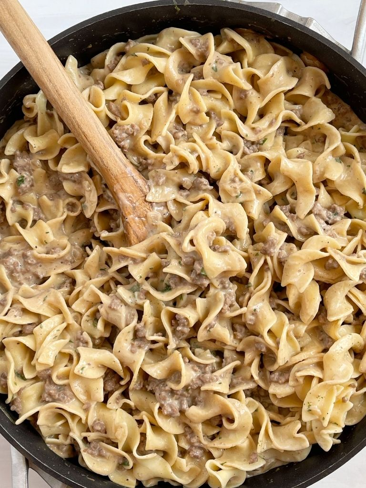

Easy Ground Beef Stroganoff

A quick pasta meal for those busy nights.
I found this recipe on one of my financial forums. The recipe is quick and easy to make but still gives the homey
comfort food taste that one wants from Stoganoff.
Ingredients
1 pound of ground beef
1 can beef broth, low sodium if possible
Fresh or minced garlic, 2-3 cloves
Sour cream 16 oz
16 oz of egg noodles
Ground black pepper
Optional - sauted mushrooms
Steps
Start pot of water to boil for pasta; once boiling add egg noodles and cook to package instructions.
Cook ground beef.
Drain ground beef and return to pan adding garlic and can of beef broth.
Bring to boil, reduce heat and let simmer while pasta is cooking.
Once pasta noodles are done, drain and return to pasta pot.
Drain the ground beef from beef broth and save the beef broth.
Add the ground beef and sour cream to the noodles.
Mix in the ground beef and sour cream until pasta is well coated.
Slowly add in beef broth to mixed pasta until sauce reaches consistency you prefer.
Add black pepper to taste.